数据类型
阅读前导：SQL 规定关键字应该大写，实际上在命令行使用 SQL 语句时为了方便和可读性，使用小写也是被允许的，本文在某些地方混用了大小写，目的是用大写强调。
SQL 的学习比较零散，本文可能会出现部分后续要学习的内容，例如 WHERE 语句等。在初学时只需先记住它的作用，后续学习再回头看就明白了。
数据类型
在计算机中，每一种数据类型都是被精心设计的，在这个寸土寸金的地方，每一个比特都应该有它的作用。从实际应用的角度看，数据库会存储成千上万甚至上亿条数据，再小单位的数据类型一旦乘以一个很大的基数，也是很大的。
和语言的数据类型类似，数据库的数据类型是用来定义和约束数据的格式、范围和操作的。不同的数据类型有不同的特点和用途，可以满足不同的数据需求和场景。数据库有那么多数据类型，主要是为了：
- 方便人类理解和辨别数据。不同的数据类型可以让人类更清楚地知道数据的含义和作用，比如日期、数字、文本等。
- 优化数据的存储和处理。不同的数据类型可以占用不同大小的存储空间，以及使用不同的算法和函数来操作。选择合适的数据类型可以节省空间，提高性能，保证数据质量。
- 支持数据的多样性和复杂性。随着互联网和物联网的发展，数据变得越来越多样化和复杂化，需要更多的数据类型来适应不同的数据结构和内容，比如图形、多媒体、JSON 等。
分类
| 分类 | 数据类型 | 说明 |
|---|---|---|
| 数值类型 | BIT(M) | 位类型：M 指定位数，默认值为 1，范围为 1-64 |
| BOOL | 布尔类型：使用 1 表示真，使用 0 表示假 | |
| TINYINT [UNSIGNED] | 占用 1 字节，默认为有符号 | |
| SMALLINT [UNSIGNED] | 占用 2 字节，默认为有符号 | |
| MEDIUMINT [UNSIGNED] | 占用 3 字节，默认为有符号 | |
| INT [UNSIGNED] | 占用 4 字节，默认为有符号 | |
| BIGINT [UNSIGNED] | 占用 8 字节，默认为有符号 | |
| FLOAT[(M,D)] [UNSIGNED] | M 指定显示长度，D 指定小数位数，占用 4 字节 | |
| DOUBLE[(M,D)] [UNSIGNED] | M 指定显示长度，D 指定小数位数，占用 8 字节 | |
| DECIMAL(M,D) [UNSIGNED] | M 指定显示长度，D 指定小数位数，每 4 个字节表示 9 个数字，小数点占用 1 字节 | |
| 文本、二进制类型 | CHAR(L) | 固定长度字符串：L 指定字符串长度，最大为 255 |
| VARCHAR(L) | 可变长度字符串：L 指定字符串长度上限，最多占用 65535 字节 | |
| BLOB | 用于存储二进制数据 | |
| TEXT | 用于存储大文本数据 | |
| 时间日期 | DATE / DATETIME | 日期类型：YYYY-MM-DD 格式 / YYYY-MM-DD HH:MM:SS 格式 |
| TIMESTAMP | 时间戳：以 YYYY-MM-DD HH:MM:SS 格式进行显示 | |
| 字符串类型 | ENUM | 枚举类型：ENUM 类型的取值范围需要在定义字段时进行指定，设置字段值时只允许从成员中选取单个值，其所需的存储空间由定义 ENUM 类型时指定的成员个数决定 |
| SET | 集合类型：SET 类型的取值范围需要在定义字段时进行指定，设置字段值时可以从成员中选取一个或多个值，其所需的存储空间由定义 SET 类型时指定的成员个数决定 |
MySQL 不像 C/C++等编程语言一样 （虽然它是 C++实现的），允许用户为错误的数据类型赋值，让用户自己承担后果。作为工业级数据管理系统，这种情况是不被允许出现的，所以 MySQL 会严格检查数据和属性的类型是否匹配。
数据库虽然在数据流上是比较靠后的层次，但是数据类型是和上层业务强相关的，所以在定义列属性时，需要根据实际情况。
这就体现了 MySQL 的“约束性”，它就是数据库保证数据安全性的第一环，约束的是程序员的行为。
数值类型
TINYINT
- 大小：1 字节
- 有符号范围：-128~127
- 无符号范围：0~255
- 用途：小整数值
在 t1 表中测试：
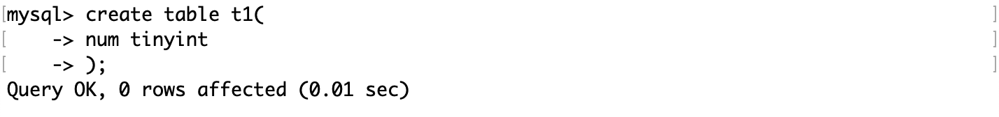 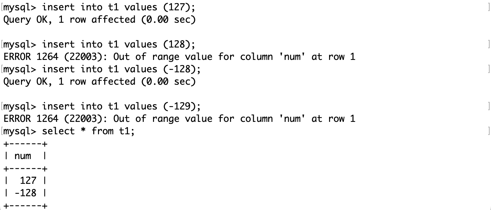当用户插入 128 或 -129 时，MySQL 检查到数值不在 1 字节的范围，报错。无符号也是一样的。
INT
- 大小：4 字节
- 有符号范围：-2,147,483,648~2,147,483,648
- 无符号范围：0~4,294,967,295
- 用途：大整数值
INT(N) 中的 N 表示显示宽度，它只用于显示，并不能限制取值范围和占用空间。显示宽度是指在输出结果中显示整数值时所用的最小字符数。如果整数值的位数小于显示宽度，MySQL 会在左边用空格或零来填充。
对于 INT 而言：
- N 的最大值是 255，这是因为在 INT 中，有一个字节被用来存储显示的宽度，一个字节能够存储的最大值是 255。
- N 的默认值是 11，这是因为 INT 最大值 ±21 亿多或 ±42 亿多，它们需要用 10 位整数表示；另外还要加上显示的正负符号，总共 11 位。
例如创建一个表，不指定 INT 的显示长度，然后再用show命令查看：
BIT
- 范围：1~64 比特
- 用途：存储二进制的位值。
用法：bit(m)，其中 m 是位值的长度，范围是 1 到 64 。如果省略 m ，默认值是 1 。例如，以下两种声明是等效的：
column_name bit(1);
column_name bit;bit 类型的字面值可以用 b’val’ 或 0bval 表示，其中 val 是只包含 0 和 1 的二进制值。开头的 b 或 B 可以省略，但前导的 0b 是区分大小写的，不能用 0B 。例如，以下都是有效的字面值：
b'101'
0b101
101bit 类型在存储和显示时会有一些特殊的处理。如果插入一个长度小于 m 的位值，MySQL 会在左边用 0 填充。如果显示一个位值，MySQL 会去掉前导的 0 。如果想要显示完整的位值，可以用 bin 函数或 lpad 函数。例如：
create table test (
b bit(4)
);
insert into test values (b'11');
select b from test; -- 输出 11
select bin(b) from test; -- 输出 11
select lpad(bin(b),4,'0') from test; -- 输出 0011下面用这个表来测试：
mysql> create table t2(
-> id int,
-> x bit(8)
-> );如果像第二条这样直接插入一个整数，而不是一个用b''包含的二进制序列，那么 MySQL 会将这个十进制整数转为二进制，也就是 10 转成二进制 1010。
在显示 bit 类型时，MySQL 会将它的二进制序列转化为十进制对应的 ASCII 值，然后再显示。在这个例子中，第一行的 ASCII 值是 2，它对应的是 STX 控制字符（Start of Text），表示正文或数据的开始，不显示任何内容（通常和 EXT，End of Text，搭配使用）；第二行的 ASCII 值是 10，对应的是 LF 控制字符（Line Feed），它的作用是换行。
如果插入值为 65，97 的整数：
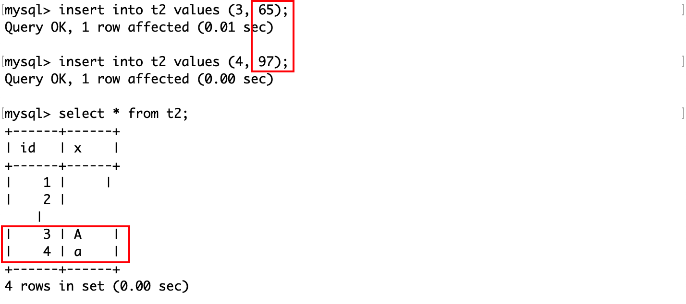按十进制的 ASCII 值打印，按二进制存储： 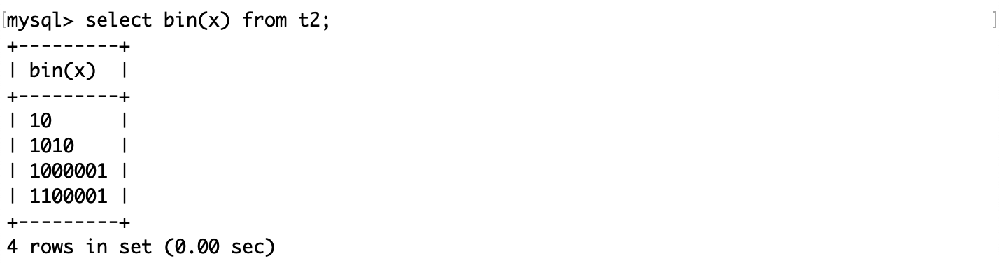
bit 类型可以用来存储状态值，比如真、假或是、否等。例如，我们可以用 bit 类型来表示一个人是否在工作：
mysql> create table t3(
-> id int,
-> working bit(1)
-> );
Query OK, 0 rows affected (0.02 sec)一个 bit 的范围只有 0 和 1，超出这个范围的值，不被 MySQL 允许插入：
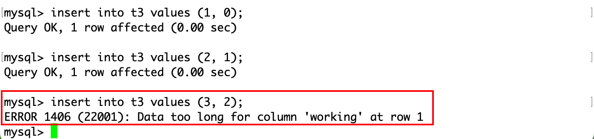那么 bit 的范围就取决于 m 的大小，即 m 位二进制序列对应的十进制的范围。
bit 类型可以用来存储状态值，比如真、假或是、否等。bit 类型可以节省存储空间，提高查询效率，但也有一些注意事项：
-
在插入和更新数据时，需要用 b’val’ 或 0bval 的格式来表示二进制的位值，其中 val 是只包含 0 和 1 的字符串。如果直接插入一个整数，MySQL 会把它当成十进制的数值，然后转换成二进制的位值。
-
在显示和查询数据时，MySQL 会把 bit 类型的值当成一个整数来显示，而不是一个位值。如果想看到位值的形式，需要用 bin 函数或 lpad 函数来格式化输出。
-
在进行条件判断或逻辑运算时，需要注意 bit 类型的值和其他类型的值之间的转换规则。比如，bit 类型的值和字符串类型的值比较时，会把字符串类型的值转换成整数类型的值。
FLOAT
FLOAT[(M,D)]：M 指定显示数值的总长度，D 指定小数位数，占用 4 字节。M 的范围是 124，默认是 10。D 的范围是 0M，默认是 0。
在表 t4 中测试：
mysql> create table t4(
-> id int,
-> num float(4, 2)
-> );其中 D 必须小于等于 M，否则会出现这样的提示：
ERROR 1427 (42000): For float(M,D), double(M,D) or decimal(M,D), M must be >= D (column 'num').值得注意的是，MySQL 检查的是这个数值的绝对值在四舍五入（即向零取整）后的结果：
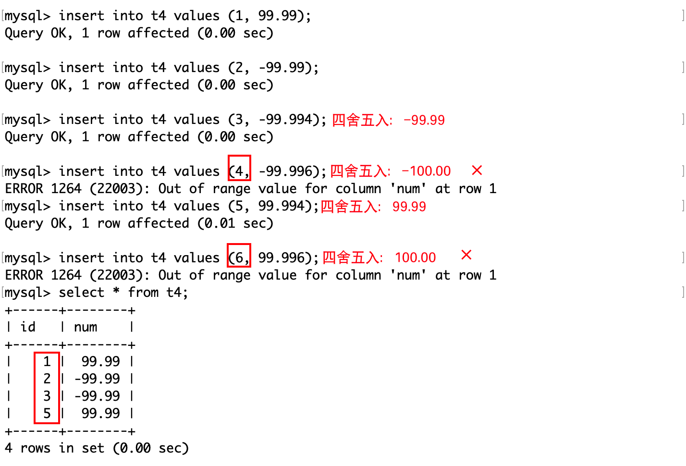向零取整：想象一下有负数和正数的数轴，对数值的绝对值做四舍五入，就是向中间的 0 取整。这里的整数是对于规定的 M 而言的，例如 M 是 2，也就是规定小数保留 2 位，那么取整时就保留 2 位。
UNSIGNED FLOAT 也遵守同样的规则，只是不能插入负数。
DECIMAL
DECIMAL 是精度更高的 FLOAT。
mysql> create table t5(
-> num1 float(8, 6),
-> num2 decimal(8, 6)
-> );浮点数存储有精度损失，根本原因是二进制无法精确表示浮点数。
[注]
DECIMAL 和 FLOAT 的底层实现是不同的。DECIMAL 类型是用十进制来存储每个数字，并且每 9 个数字占用 4 个字节。比如，一个 DECIMAL(18,9) 类型的值，会被分成两部分：整数部分和小数部分，每部分占用 4 个字节，共占用 8 个字节 。FLOAT 类型是用二进制来存储浮点数，并且每个浮点数占用 4 个字节。一个 FLOAT 类型的值，会被分成四部分：符号位、指数位、基数位和尾数位，每部分占用一定的二进制位 。
字符串类型
CHAR
- 大小：0~255 字节
- 用途：定长字符串
用法：
CHAR(N)其中 N 表示的是字符而不是字节，不论是英文字母还是中文字符，都视为 1 个字符。
mysql> create table t6(
-> str char(4)
-> );注意，SQL 的规定是用一对单引号表示字符串，但是用双引号也是被语法允许的。如果单引号和双引号是字符串的一部分，使用\转义。
VARCHAR
- 大小：0~65535 字节
- 用途：变长字符串
用法和 CHAR(N) 一样，也是 VARCHAR(N)。
mysql> create table t7(
-> str varchar(4)
-> );VARCHAR 和 CHAR 在插入记录时不是都遵守同样的规则吗？VARCHAR 的“变长”体现在哪里？
CHAR 和 VARCHAR 的比较
VARCHAR 和 CHAR 都是用来存储字符串的数据类型，但是它们有一些不同之处：
- CHAR 是固定长度的类型，VARCHAR 是可变长度的类型。这意味着 CHAR 类型的列总是占用指定的字节数，不管实际存储的值有多长，而 VARCHAR 类型的列只占用实际值的字节数再加上一个或两个字节来记录长度。除此之外，还用一个字节来存储排序规则。那么实际存储有效数据的最大列长度是 65535 - 3 = 65532 字节。
- CHAR 类型的列在存储时，如果值的长度小于指定的长度，MySQL 会在右边用空格字符补足。在检索时，这些空格字符会被去掉。VARCHAR 类型的列在存储和检索时，不会添加或删除任何空格字符。
- VARCHAR 类型的列可以节省存储空间，因为它只占用实际值所需的字节数。但是，它也有一些额外的开销，比如记录长度和处理变长数据。CHAR 类型的列可以提高性能，因为它不需要处理变长数据，但是它也可能浪费存储空间，如果值的长度远小于指定的长度。
VARCHAR 类型的“变长性”体现在它可以根据实际值的长度来分配存储空间，而不是固定地占用指定的字节数。这样可以避免浪费空间，也可以适应不同长度的字符串。
VARCHAR 类型的限制和规则是：
- VARCHAR 类型的最大长度不能超过 65535 字节，在 MySQL 5.0.3 之前不能超过 255 字节。
- VARCHAR 类型的最大长度还受到字符集编码和行定义长度的影响。不同的字符集编码可能占用不同的字节数来表示一个字符，比如 gbk 每个字符最多占 2 个字节，utf8 每个字符最多占 3 个字节。
- gbk：65532（字节） / 2 = 32766（字符）
- utf8：65532（字节） / 3 = 21844（字符）
- 如果分配给 VARCHAR 列的值超过列的最大长度，则对值进行裁剪以使其适合。如果被裁掉的字符不是空格，则会产生一条警告。如果裁剪非空格字符，则会造成错误（而不是警告）并通过使用严格 SQL 模式禁用值的插入。
下面是一些例子来说明 VARCHAR 类型的特点和限制：
- 假设有一个表 t4，定义为
create table t4 (c VARCHAR(20)) charset = gbk;，那么 c 列可以存放 20 个字符，无论是数字、字母还是汉字（每个汉字占 2 个字节），最大占用 40 个字节（再加上一个字节记录长度）。 - 假设有一个表 t5，定义为
create table t5 (c VARCHAR(20)) charset = utf8;，那么 c 列可以存放 20 个字符，无论是数字、字母还是汉字（每个汉字占 3 个字节），最大占用 60 个字节（再加上一个或两个字节记录长度）。 - 假设有一个表 t6，定义为
create table t6 (c1 CHAR(10), c2 VARCHAR(10)) charset = gbk;，那么 c1 列总是占用 20 个字节（再加上一个字节记录长度），不管实际值有多长，而 c2 列只占用实际值的字节数再加上一个字节记录长度。如果插入一条数据insert into t6 values ('abc', 'abc');，那么 c1 列占用 21 个字节，存储为'abc'+ 17 个空格，而 c2 列占用 4 个字节，存储为 3 + ‘abc’（3 表示长度）。 - 假设有一个表 t7，定义为
create table t7 (c VARCHAR(10)) charset = gbk;，那么 c 列可以存放 10 个字符，最大占用 20 个字节（再加上一个字节记录长度）。如果插入一条数据insert into t7 values ('abcdefghijk');，那么 c 列会被裁剪为 10 个字符，存储为 10 +'abcdefghij'，并且会产生一条警告。
如何选择二者？
- CHAR
- 大小一致。例如性别、国家代码、电话区号、md5 签名等。
- 需要频繁更新，并且可能导致变长数据超出原始分配空间，这样可以避免页分裂和内存碎片问题。
- VARCHAR
- 大小差异大。例如姓名、地址、电子邮件等。
- 不需要频繁更新，并且需要节省空间，这样可以减少磁盘 I/O 次数和内存占用。
- 需要保留末尾的空格字符，因为 CHAR 会自动删除末尾的空格字符。
BLOB
BLOB 用来存储二进制大对象，比如图片、视频、音频等。BLOB 有四种不同的子类型，它们只是在存储的最大容量上有所区别，分别是：
- TINYBLOB：最大 255 字节
- BLOB：最大 65K 字节
- MEDIUMBLOB：最大 16M 字节
- LONGBLOB：最大 4G 字节
TEXT
TEXT 用来存储长文本数据，比如文章、评论、博客等。TEXT 类型有四种不同的类型，它们只是在存储的最大容量上有所区别，分别是：
- TINYTEXT：最大 255 字节（255 个字符）
- TEXT：最大 65K 字节（65,535 个字符）
- MEDIUMTEXT：最大 16M 字节（16,777,215 个字符）
- LONGTEXT：最大 4G 字节（4,294,967,295 个字符）
TEXT 类型的数据不会被自动截断，也不会删除或填充空格。TEXT 类型的数据不存储在数据库服务器的内存中，因此每次查询时都需要从磁盘读取，这会比 CHAR 和 VARCHAR 类型慢得多。
在使用上，可以当做一个普通的字符串类型来使用，如文章或博客这种需要持久化的数据，一般用 TEXT 保存。
持久化，也就是将内存中的数据写入磁盘中，以便后续再次使用。
NULL 和''
它们是 MySQL 中两种不同的空值表示方式：
NULL表示一个未知的或未定义的值，而''表示一个空字符串。NULL在参与比较或计算时，结果仍然是NULL，而''可以正常进行比较或计算。NULL在进行统计或求和时，会被忽略，而''会被计算在内。NULL需要用IS NULL或IS NOT NULL来判断，而''可以用 = 或 <> 来判断。NULL需要占用额外的空间来记录其状态，而''不占用空间。
实际上，select 这个 MySQL 命令可以求表达式的值，例如： 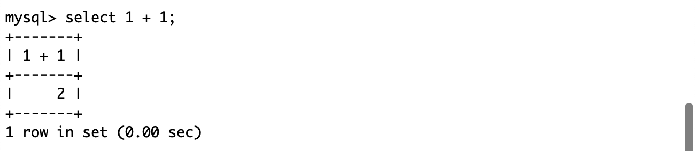
下面可以对 NULL 和’‘做测试： 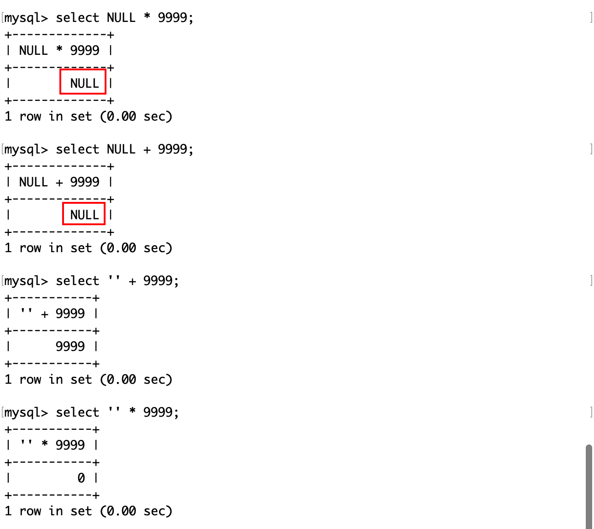
由此可见，NULL 表示“什么都没有”，也就是“无”；而''表示一个空字符串。注意，在 MySQL 中，''会被转化为转化为一个浮点数0.0，所以对它做乘法的结果是 0，假如你用另一个浮点数和它做运算，也是会出现浮点数精度误差的。
日期和时间类型
| 类型 | 大小 ( bytes) | 范围 | 格式 | 用途 |
|---|---|---|---|---|
| *DATE | 3 | 1000-01-01/9999-12-31 | YYYY-MM-DD | 日期值 |
| TIME | 3 | ‘-838:59:59’/‘838:59:59’ | HH:MM:SS | 时间值或持续时间 |
| YEAR | 1 | 1901/2155 | YYYY | 年份值 |
| *DATETIME | 8 | ‘1000-01-01 00:00:00’ 到 ‘9999-12-31 23:59:59’ | YYYY-MM-DD hh:mm:ss | 混合日期和时间值 |
| *TIMESTAMP | 4 | ‘1970-01-01 00:00:01’ UTC 到 ‘2038-01-19 03:14:07’ UTC 结束时间是第 2147483647 秒，北京时间 2038-1-19 11:14:07，格林尼治时间 2038 年 1 月 19 日 凌晨 03:14:07 | YYYY-MM-DD hh:mm:ss | 混合日期和时间值，时间戳 |
[注] 标*表示常用项。
mysql> create table t8(
-> time1 date,
-> time2 datetime,
-> time3 timestamp
-> );查看表结构：
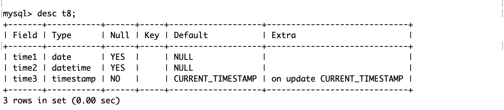其中，timestamp 列属性不允许为 NULL，并且默认值为 CURRENT_TIMESTAMP，它的含义是：如果你在创建一个时间字段时，使用了 DEFAULT CURRENT_TIMESTAMP 或者 ON UPDATE CURRENT_TIMESTAMP，那么数据库会自动维护这个字段的值，不需要你手动指定。
下面是一个例子，着重理解第三个时间戳列属性：
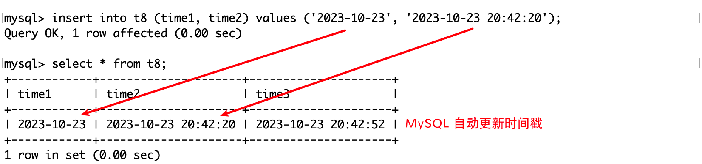在插入时没有指定时间戳，那么 MySQL 会自动插入当前的时间戳。
我们可以利用这个特性，让 MySQL 维护这个列属性。例如在用户发表博客，评论等事件时：
mysql> create table t9(
id int,
nickname varchar(20),
comment text(100),
cmt_time timestamp
);当用户对评论进行修改，实际上就是 MySQL 对这条记录修改：
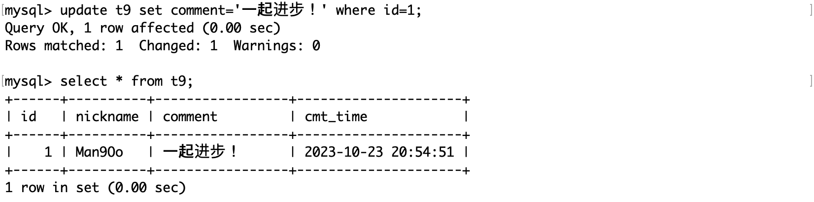ENUM 和 SET
MySQL 的 ENUM（枚举） 和 SET（集合） 是两种复合数据类型，它们都可以用来存储一组预定义的字符串值。它们的区别是：
- ENUM 类型只能从预定义的值中选择一个，而 SET 类型可以选择零个或多个。
- ENUM 类型的存储空间取决于预定义的值的数量，而 SET 类型的存储空间取决于预定义的值的数量和选择的值的数量。
- ENUM 类型的排序是按照预定义值的顺序，而 SET 类型的排序是按照字母顺序。
下面是一些例子来说明它们的用法：
- 如果想存储一个人的性别（非男即女），使用 ENUM 类型；想存储一个人的爱好（可以有多个），使用 SET 类型。例如：
mysql> create table t10(
-> name varchar(20),
-> gender enum('男', '女'),
-> hobby set('音乐', '电影', '游泳', '足球')
-> );请注意在插入 SET 的多个参数时，只需要用英文逗号隔开，被包含在一对单引号中。
MySQL 为了存储的效率，它将 SET 中的一组预定义的字符串视为一组二进制位。当用户查询或插入 SET 值时，可以使用字符串（上面的做法）或者（十进制）数字来表示，但是 MySQL 实际上是用二进制位来存储和比较的。
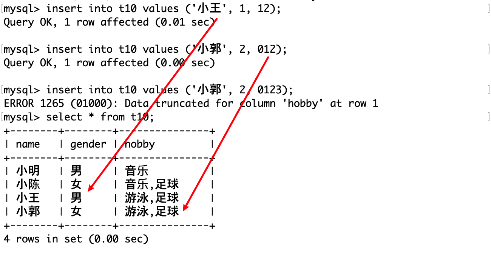在这个例子中，插入 SET 记录使用的是十进制的整数，整数的合法性取决于 SET 的长度，例如在 SET[‘音乐’, ‘电影’, ‘游泳’, ‘足球’] 中，这 4 个字符串对应的二进制权值位分别是 [1, 2, 4, 8](SET 最多能够存储 64 个字符串)，总共 15，即最大值是 15。所以当插入 123 时，是不合法的。
其中 12 的二进制序列是 [0011]，对应着 SET 的后两个字符串。
如果你想用二进制序列b'1111'或者0b1111插入记录，是不被 SQL 允许的。
虽然语法上允许使用十进制数字插入记录，但是对于后期维护和插入时的人员而言都不友好，一是要进行进制转换，而是可读性差。
另外，SET 和 ENUM 的下标都是从 1 开始的，而不是从 0，这是出于 MySQL 用户不一定是程序员的考虑。
FIND_IN_SET
find_in_set(str, str_set)，这个函数是用来验证 str 这个字符串是否在 str_set 这个集合中的，如果找到则返回下标；找不到则返回 0。
例如在上面这个表中：
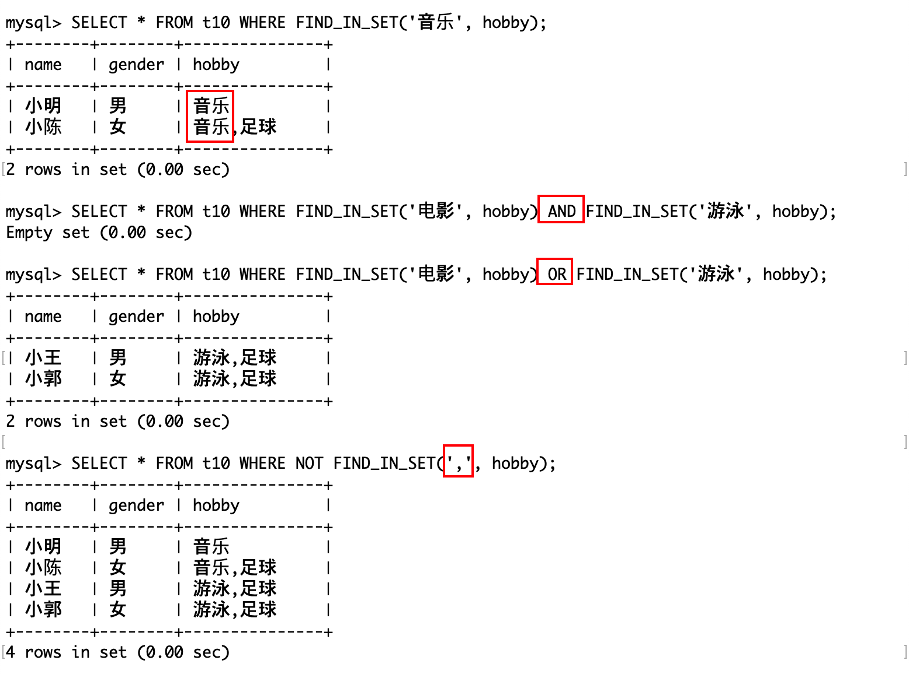- find_in_set 函数只能用于字符串类型的列，如果列的类型是 set，那么它会被转换成字符串再进行比较。
- find_in_set 函数只能用于单个值的查找，如果要查找多个值，需要用多个 find_in_set 函数并用 AND 或 OR 连接。
- find_in_set 函数不能用于模糊匹配，如果要查找包含某个子串的值，需要用 like 函数。